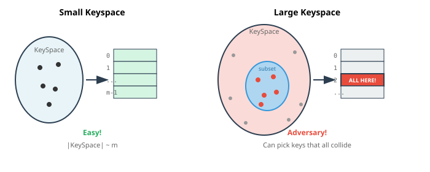

The Magic of O(1) Lookup
Week 6, Thursday Video
February 12, 2026
The Dictionary Dream
What if we could do this?
| Insert |
O(1) |
| Find |
O(1) |
| Delete |
O(1) |
No searching. No sorting. Just… know where everything is.
Python’s dict and set
You’ve been using this magic all along:
seen = set()
seen.add("apple") # O(1)
"apple" in seen # O(1)
ages = {}
ages["Alice"] = 25 # O(1)
ages["Alice"] # O(1) → 25
How does this work?
A Hash Table
ages = {}
ages["Alice"] = 25
ages["Bob"] = 30
print(ages["Alice"]) # → 25
A hash table consists of:
- An array of slots
- A hash function: key → index
- ??
What’s a Hash Function?
A function that turns any key into an integer.
hash("hello") # → 8743927429234
hash("world") # → -3847293742938
hash(42) # → 42
hash((1, 2, 3)) # → 529344067295497451
Then we use % m to fit it into our array of size m.
What Makes a Good Hash Function?
- Spreads data uniformly across the table (SUHA)
- Computed in O(1) time
- Deterministic: if
k1 == k2, then h(k1) == h(k2)
But “spreads uniformly” doesn’t mean two keys won’t land in the same cell…
The Adversary Problem

Solution: Universal hashing — randomly choose the hash function at runtime.
The adversary can’t predict which keys will collide!
The Problem: Collisions
What if two keys hash to the same index?
hash("apple") % 7 # → 3
hash("grape") % 7 # → 3 # Uh oh!
This is called a collision.
With only \(\sqrt{m}\) keys in a table of size \(m\), we expect at least one collision.
(This is the birthday paradox you saw in DSCI 220!)
Collisions Are Inevitable
Even with a “good” hash function, collisions happen.
Why? Because we’re mapping a huge keyspace into a small array.
- Possible strings: practically infinite
- Array size: maybe 1000 slots
We need a collision resolution strategy.
Strategy: Separate Chaining
Each slot holds a list of items that hash there.
Insert {16, 8, 4, 13, 29, 11, 22} with h(k) = k % 7:
Separate Chaining: Analysis
To find a key:
- Hash to get the slot: O(1)
- Search the list at that slot: O(length of list)
Key question: How long are the lists?
The Load Factor
Load factor \(\alpha = n/m\)
- \(n\) = number of items stored
- \(m\) = number of slots (array size)
If items are spread evenly, each list has length \(\approx \alpha\).
Under uniform hashing assumption:
- Expected time to find = \(O(1 + \alpha)\)
Strategy: Linear Probing
Instead of chaining, store items directly in the array.
If slot h(k) is full, try h(k)+1, then h(k)+2, …
def insert(key, value):
i = hash(key) % m
while array[i] is not None:
i = (i + 1) % m # probe next slot
array[i] = (key, value)
Advantage: No linked lists, better cache performance.
Disadvantage: Clustering — full regions grow and merge.
Linear Probing: Watch and Listen
Double Hashing: Watch and Listen
The Secret to O(1)
Remember: \(\alpha = n/m\)
- \(n\) = number of items
- \(m\) = table size
If we keep \(\alpha\) constant (say, \(\alpha \le 2/3\)), then:
- Expected probes = \(O(1)\)
- Expected find time = \(O(1)\)
- Expected insert time = \(O(1)\)
The Punchline: Resizing
The old message:
- When the array fills,
- Double the array size
- Copy all items to the new array
This single resize costs O(n)…
Amortized O(1)
You’ve seen this movie before! (Dynamic arrays, Week 5)
- Most inserts: O(1)
- Occasional resize: O(n)
Using the same accounting trick:
Amortized cost per insert = O(1)
The Full Picture
Hash table operations are O(1) expected, amortized:
| Insert |
O(1) expected, amortized |
| Find |
O(1) expected |
| Delete |
O(1) expected |
“Expected” = assuming good hash function “Amortized” = averaging over many operations
Why “Expected”?
The O(1) relies on:
- A good hash function that spreads keys uniformly
- No adversary choosing keys to cause collisions
In practice, Python’s built-in hash functions are excellent.
Worst case (all keys collide): O(n) — but this almost never happens.
Python’s Implementation
Python dict uses:
- Open addressing (not chaining) — items stored directly in array
- Resizes at \(\alpha \approx 2/3\)
- Sophisticated probing to handle collisions
You don’t need to know the details — just that it’s O(1)!
Summary
Hash tables give O(1) lookup by:
- Using a hash function to map keys → array indices
- Handling collisions (e.g., with chaining)
- Resizing (double, copy, re-hash) to keep load factor constant
This is the magic behind Python’s dict and set.
What’s Next
Wednesday: The dictionary trick in action!
- Two-Sum: O(n²) → O(n)
- Anagram detection
- Frequency counting
The pattern: “Have I seen this before?” = dictionary lookup